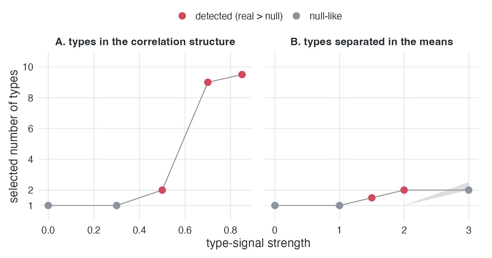

Clustering methods will always give you clusters, even when the data are one smooth cloud. That makes it hard to know whether the reported clusters reflect real structure or are simply artifacts of the method.
matchednull helps you find out. It creates a null twin of your dataset with exactly the same marginal distributions and approximately the same correlation structure, but no cluster structure by construction. You then run your own clustering pipeline on both the observed data and the null twins. If the observed data consistently yield more clusters than the null twins, that’s evidence of genuine cluster structure. Otherwise, you’ll know before a reviewer asks.

Positive controls. The grey shaded band is the matched null’s 95% interval: a point is red (detected) when the real number of clusters exceeds the band, grey (null-like) when it falls inside. The test detects real types whether they live only in the correlation structure (left) or in well-separated means (right). In the right panel the band widens at the largest separation, where the groups grow far enough apart to surface in the margins themselves and the margin-preserving null reproduces them.
copula_null() generates the null twins, preserving every marginal distribution exactly and the correlation matrix to within sampling error. matched_null_test() applies any user-supplied clustering pipeline to the observed data and to R null twins, then tests whether the observed result stands out from the null distribution.
Installation
install.packages("matchednull")
# dev version, has the t-copula stress test
remotes::install_github("haomeng797-ship-it/matchednull")Quick example
library(matchednull)
library(mclust)
pick_k <- function(d) Mclust(d, G = 1:5, verbose = FALSE)$G
set.seed(1)
x <- matrix(rnorm(500 * 4), 500, 4) # typeless data
set.seed(2)
matched_null_test(x, pick_k, R = 50)
#> Matched-null test (50 Gaussian null twins)
#> real statistic: 1
#> null interval: [1, 1]
#> p (real >= nulls): 1
#> verdict: null-like (within the twins' interval)See vignette("matchednull") for the full walk-through, including a case where genuine types hide in the dependence structure and the test fires. The How it works article covers the null construction, the positive controls, and the false-positive calibration in more detail.
In our calibration runs on skewed but clusterless data, standard criteria (BIC, the bootstrap LRT) reported structure in every dataset. The matched-null test flagged none of them.
Reference
The method, its positive controls, and its false-positive calibration are described in the accompanying paper Types Without Taxa (Meng, 2026; preregistration: https://osf.io/2ekcg).